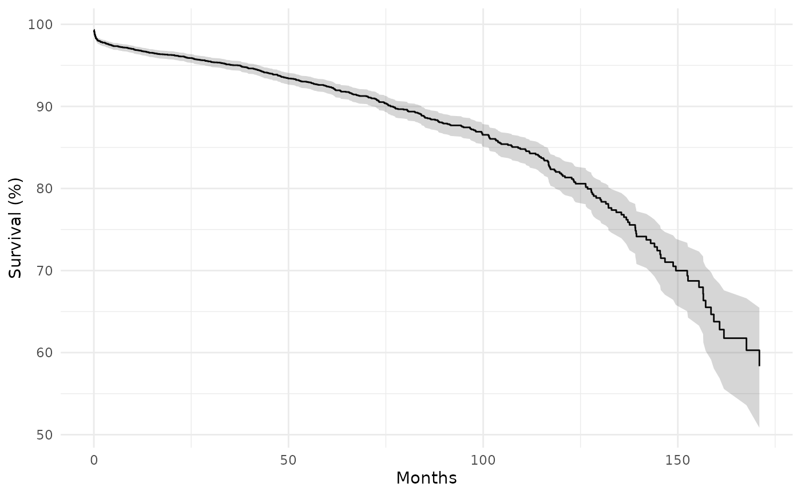

Compute the product-limit (Kaplan-Meier) survival estimate with
logit-transformed confidence limits that respect the \([0, 1]\)
boundary.
This is the R equivalent of the SAS kaplan.sas macro.
Arguments
- time
Numeric vector of follow-up times.
- status
Numeric event indicator (1 = event, 0 = censored).
- conf_level
Confidence level for the interval (default 0.95). The SAS default of 0.68268948 corresponds to a 1-SD interval.
- event_only
Logical; if
TRUE(default), only return rows at event times (wheren_event > 0). IfFALSE, return rows at all times reported bysurvival::survfit()(events and censoring times).
Value
A data frame with one row per time point and columns:
- time
Event/censoring time.
- n_risk
Number at risk at start of interval.
- n_event
Number of events at this time.
- n_censor
Number censored at this time.
- survival
Kaplan-Meier survival estimate.
- std_err
Standard error of survival (Greenwood).
- cl_lower
Lower confidence limit (logit-transformed).
- cl_upper
Upper confidence limit (logit-transformed).
- cumhaz
Cumulative hazard \(= -\log(S)\).
- hazard
Interval hazard rate \(= \log(S_{t-1} / S_t) / \Delta t\).
- density
Probability density estimate \(= (S_{t-1} - S_t) / \Delta t\).
- life
Restricted mean survival time (area under curve to this time).
Details
The standard Greenwood confidence interval can exceed \([0, 1]\) in the tails. The logit-transformed interval avoids this by working on the log-odds scale:
$$ \text{CL}_{\text{lower}} = S / \bigl(S + (1-S)\, \exp(z_\alpha\,\text{SI})\bigr) $$ $$ \text{CL}_{\text{upper}} = S / \bigl(S + (1-S)\, \exp(-z_\alpha\,\text{SI})\bigr) $$
where \(\text{SI} = \sqrt{V_P - 1} / (1 - S)\), \(V_P\) is the cumulative Greenwood variance product, and \(z_\alpha\) is the normal quantile for the requested confidence level.
See also
hzr_gof() for parametric vs. nonparametric comparison.
Examples
data(cabgkul)
km <- hzr_kaplan(cabgkul$int_dead, cabgkul$dead)
head(km)
#> Kaplan-Meier estimate with logit confidence limits
#> Events: 69 | Time points: 6
#> Survival range: 0.9883 to 0.9934
#> RMST at last event: 0.1957
#>
#> time n_risk n_event n_censor survival std_err cl_lower cl_upper cumhaz
#> 0.03285 5880 39 0 0.9934 0.0011 0.9909 0.9952 0.0067
#> 0.06571 5841 9 0 0.9918 0.0012 0.9892 0.9938 0.0082
#> 0.09856 5832 3 0 0.9913 0.0012 0.9886 0.9934 0.0087
#> 0.13142 5829 7 0 0.9901 0.0013 0.9873 0.9924 0.0099
#> 0.16427 5822 9 0 0.9886 0.0014 0.9855 0.9910 0.0115
#> 0.19713 5813 2 0 0.9883 0.0014 0.9852 0.9907 0.0118
#> hazard density life
#> 0.2026 0.2019 0.0328
#> 0.0469 0.0466 0.0655
#> 0.0157 0.0155 0.0981
#> 0.0366 0.0362 0.1306
#> 0.0471 0.0466 0.1632
#> 0.0105 0.0104 0.1957
# \donttest{
if (requireNamespace("ggplot2", quietly = TRUE)) {
library(ggplot2)
ggplot(km, aes(time)) +
geom_step(aes(y = survival * 100)) +
geom_ribbon(aes(ymin = cl_lower * 100, ymax = cl_upper * 100),
stat = "identity", alpha = 0.2) +
labs(x = "Months", y = "Survival (%)") +
theme_minimal()
}

# }